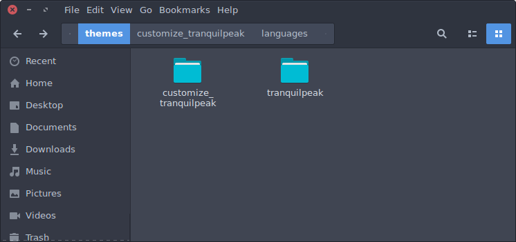
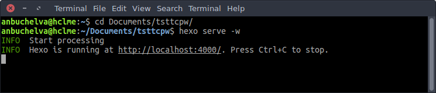

It became common for all the authors to write why/how they have setup their blogs. It serves two purposes, a newbie can understand how to setup a new blog following the experience and for personal satisfaction.
This post explain why I have setup this blog. So, I have to explain how did I setup.
Table of Contents
Ingrediants
- A PC that run on linux desktop environment (you may google how to setup hexo in windows environment)
- Hexo - The Engine
- Github - hosting
- Google Domain - custom domain
- Cloudflare - DNS configuration, security, etc.,
- Travis-CI - Continuous Integration
Looks scary? Definitely No.
The Setup
Setup Hexo
A complete guide is available here to install dependencies and Hexo. You may use the following code, if you are running Ubuntu1
2
3
4
5sudo apt-get update
sudo apt-get install git-core
sudo apt-get install nodejs
sudo apt-get install npm
npm install -g hexo-cli
Once Hexo is installed, use the following commands to inialize the project.1
2
3hexo init <folder>
cd <folder>
npm install
If you wish to use the default landscape theme, use hexo new post <post name> command to create a new post.
You can stop reading further and good to go here.
Customization
If you wish to use the Tranquilpeak was developed by Louis Barranqueiro theme as like this blog, follow the below steps. This theme needs some additional setup as mentioned below.
- Setup themes folder & customization
- Build theme
- Enable pages like archive, tags, etc.,
- Run Server
- Create post, page, etc.,
I used the theme’s git repository without any modifications as git submodule. So that, whenever the theme is upgraded to new version, I need not to do anything on the theme template or re-sync from beginning. I have a separate folder called customize_tranquilpeak, which needs to be copied into the /themes/tranquilpeak/ folder. Refer my git repository themes to see how do I manage the theme with my customizations.
Setup Themes folder
Navigate to your project folder in the terminal
1 | #navigate to themes folder |
Your folder should look like this screen shot after this.

Now copy the _config.yml and languages\en.yml files under customize_tranquilpeak folder and customize these files to match with your requirement. You may refer here for sample. For complete customization guide refer this link.
Build Theme
Run the following commands to build theme.1
2
3
4
5
6
7
8cp -rf themes/customize_tranquilpeak/* themes/tranquilpeak
cd themes/tranquilpeak
npm install
sudo npm install grunt-cli -g
sudo npm install bower -g
bower install
grunt buildProd
cd ..
Enable pages like archive, tags, etc.,
Refer these links for creating the common pages.
Run Server
Run hexo serve -w to start the server. When you see this output, you are ready to open your browser and see the blog in localhost:4000.

1 | hexo clean |
The above commands would generate the static website, which can be pushed to github.
Push it to github repo
Create an account in https://github.com, if you don’t have one. Then create a repository as <your user id>.github.io
run the following commands in your project/source folder.1
2
3
4
5
6git init
git commit -m "initialize blog"
git remote add origin git@github.com:<your user id>/<your user id>.github.io.git
git config --global user.name <your name>
git config --global user.email <your email id>
git push -u origin master
This will push all your work to <your user id>.github.io in master branch. You can push the updates by running the following commands.
1 | git add . |
Custom Domain
- Create a file named “CNAME” in the source folder and add your custom domain without any prefix for E.g.,
tsttc.pw - Just ignore the step, if you don’t have a custom domain and your blog would be available in
<your github user name>.github.io
Enabling Continuous Integration
I thought of covering the CI as well, but the post became very long than I expected. So, I will create a separate post and link here for enabling CI using different services.
Questions
So, guess how much I would have paid for using those services?
- Everything is free of cost except the domain, which costs $9 per annum.
Why do you use Hexo?
- Blogger and Wordpress are providing ready made options. But I wanted to use a static blog using markdown language, gives more customization.
Why not Jekyll or other static generators?
- Jekyll is simple but slow
- I have explored different static site generators like Jekyll, Hugo, Ghost and finally settled with Hexo.